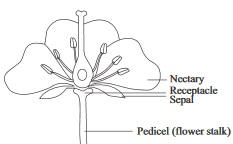
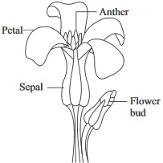
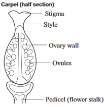
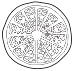
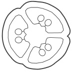

New Senior School Biology Practical Activity & Work Book 3
Chapter
5
SEXUAL REPRODUCTION AND REPRODUCTIVE BEHAVIOURS
Notable Concepts
Sexual reproduction
Sexual reproduction in vertebrates.
Sexual reproduction in flowering plant.
Reproductive behaviours.
Background Information
Species of organisms survive and still continue their existence through the process of reproductIon.Reproduction can be asexual or sexual
Sexual reproduction: Sexual reproduction involves two sex cells called gametes. Two critical events that take place in sexual reproduction are: Meiosis and Fertilization.
Meiosis is a cell division that gives rise to gamete (sexcell) which has a haploid number of chromosomes (n) while fertilization is the fusion of the nucleus of the male and female gametes to give rise to a zygote which has a diploid number of chromosomes (2n).
Sexual reproduction requires male and female gonads (which are gametes producing parts); energy and food for gamete production, development of new organism and reproductive behaviour that will enhance the presence of mature male/female gametes at the place of fertilization at the right time.
Advantages of Sexual Reproduction:
One main advantage or importance of sexual reproduction is the Genetic variation that results from it during meiosis and fertilization which gives rise to the following benefits:
Proper and better adaptation of species to the environment.
Ability to survive unfavorable environmental conditions which will promote life continuity.
SEXUAL REPRODUCTION IN VERTEBRATES
Among all vertebrates; there are individual males and females of separate sexes. Mature gametes from each of the opposite sexes can only be brought together at the right time for fertilization to occur. This is achieved by mating or copulation among the opposite sexes.
Reproduction in Fishes and Amphibian
Fishes: Reproduction takes place in an aquatic environment, it is characterized by the following features and events:
Lays numerous egg in most cases.
External fertilization in most cases.
Eggs hatch into larvae.
Oviparity (laying of egg).
No parental care.
Wasteful Reproduction process.
Amphibians e.g Toads and frogs
Reproduction takes place in an aquatic environment.
Fertilization is external
Oviparity
Distasteful gelatinous layer protects the eggs from being eaten.
Fertilized eggs hatch into larva
There is complete metamorphosis
Small portion of the larva develop into adults
No parental care.
Reproduction is wasteful.
Amphibians e.g Toads and frogs
fig5.1a:
fig5.1b:
Sexual Reproduction in birds
Reproduction takes place in a terrestrial external environment.
Fertilization is internal
Oviparity
They do incubate their laid eggs
The eggs are hatched into young ones
There is parental care and
Reproduction process is not wasteful.
fig5.2:
Amniotic Egg
Male Reproductive System
fig5.3a:
Vertical Section
Female Reproductive System
fig5.3b:
Vertical Section
Sperm Production
Sperms are produced by the seminiferous tubules of the testis. These tubules are lined with layers of actively dividing cells. These cells migrate, enlarge and undergo meiosis to bring the process of sperm production with the formation of spermatids. These spermatids mature into non-motile spermatozoa, which are carried passively to the epididymis. They mature into motile sperms which eventually move to the sperm duct. This whole process takes about 72days to take place. The sperm at the sperm duct can remain active for three months.
Sperm production in male humans begins at puberty and continues till old age. Up to 300 million sperms can be produced in a day by the seminiferous tubules.
fig5.3c:
Sperm Cell
Ova maturation and the menstrual cycle
Females are born with ovaries which contain potential egg cells called primary oocytes. The production of mature ova is a cyclic process which involves certain events that take place in the ovary (ovarian cycle) and the uterus (uterine cycle).
The ovarian cycle:
Each oocytes is surround by a structure called follicle – an actively dividing granular cell. The oocytes receives nutrients from the follicle.
A mature follicle is called Graafian follicle. Follicle secrete ooestrogen hormone. The secretion of oestrogen increases with the maturity of the follicles. The follicles become filled with fluid and pushes the oocytes to one side as they mature. A mature follicle (graafian folloicle) contains a secondary oocytes. The follicle bulges on the surface of the ovary and finally splits the ovarian lining and releases the egg into the abdominal cavity. This is called ovulation and normally only one of the follicles becomes mature to produce one ovum (egg). The released egg has a protein coat called zona pellucidia and layer of granular cells surrounding it. The ovum eventually gets wafted into the oviduct.
Ovulation takes place about day 14 from the beginning of the cycle. The Graafian follicle developes into corpus Luteum after releasing the ovum. Corpus luteum secretes progesterone and little oestrogen hormones. It shrivels if fertilization and implantation does not occur while the unfertilized egg dies.
Uterine Cycle:
This aspect of menstrual cycle involves the tickening of the endometrium at the uterus and the increase in supply of blood to it in readiness for implantation of the zygote. If fertilization does not occur, the endometrium breaks down. Blood and some endometrium tissue then leave the body through the vagina opening. This is called menstruation. Both the uterine and ovarian part of the cycle make up the menstrual cycle. The process is controlled by ostrogen, projesterone, follicle stimulating hormone and luteiuzing hormone.
Sexual Reproduction in Flowering Plants
fig5.4:
Flower Structure
There are four whorls that make up a flower. They are: The sepals (collectively called calyx). The petals (collectively called corolla), The stamens (collectively known as Androecium) and The carpel's (collectively called Gynoecium's).
The four Whorls of a Flower and Their Functions
Diagram of the structure showing different part
fig5.5a

(i) The sepals
Not directly concerned with sexual reproduction.
They are usually small and green
Separated ones are referred to as gamosepatous.
They protect the essential parts of the flower at the bud stage.
fig5.5b

fig5.5c
(ii) Petals
Separated ones are called polypetalous
Joined ones are called gamopetalous.
They are brightly coloured
They protect the stamens and carpel.
Their colours and scent facilitate pollination.
fig5.5
(iii) Stamens
They are made up of the filament and anther.
They are the male reproductive part of the flower.
They can be free or united, whereas in some, filament can be united while the anters are free.
fig5.5g

fig5.5g
fig5.5i

fig5.5j
fig5.5k

(iv) Carpels
They are the female reproductive part of the flower.
There can be one carpel (monocarpous) e.g flamboyant.It can be two or more carpel (syncapous)
Separate or fused simple structure carpel is called pistil.
(v) A single structure or separated carpel (pistil) has among most of them:One ovary
One or more styles One or more stigmas the tip[ part of the style.
The ovary contain ovules and the arrangement of the ovule in the ovary is called placentation.
Reproductive Behaviours
Behaviours that facilate and ensure fertilization are called reproductive behaviours. Such behaviour include the following:
Courtship
Pairing
Territoriality
Seasonal breading migrations
Parental care etc.
Reproduction
Its characteristics or features
1
Courtship: Reproductive communication between opposite sexes of animals that ends in sexual union
Visual signals as in displaying of a male peacocks before a peahen and the displaying of orange coloured head of a male lizard before a female one.Auditory signal: Croaking of toad, in the night during rainy season; mating calls of pigeons e.t.c.Smell signal: sex attractants which is secreted by the anal gland of a civet cat and the one secreted in the urine of cows when on heat.
2
Pairing: The coming together of compatible individuals of opposite sexes for sexual union for life or for a brief period.
(i). Pairing can be between one male and female of the same species for a brief period or for life. (ii) It can be one male and a group of female for a brief period or for life.
(iii) In certain cases especially in the first case, parental care is by both parents.
(iv). In other cases it is only one parent usually the female that takes care of the young.
3
Territoriality
A behaviour in which a member of species (usually the males) marks out a fixed area and defends it against intruders.
(i).Territories are established prior to mating
(ii) Intruding males are chased or scared away while females can be allowed or even wooed in.
(iii) The behaviour ensures adequate food and space for the occupants of the territory.
(iv) Also the fittest pass favorable characteristics to offspring's thus increasing their survival value.
4
Seasoonal breeding migration: Seaonal two way movement of certain animals which are associated with breeding
This occur mostly in birds and also in mammals
5
Parental care:
The behaviour of caring for the young after they are hatched or born.
This occur mostly among birds and mammals.
Pollination in Plants
Pollination is the transfer of pollen grains from the anters to a receptive stigma of a a flower of the same plant species. Pollination is of two types (i) self pollination and (ii) Cross pollination
1. Self Pollination:
A type of pollination that takes place when mature pollen grains from the anter of a flower falls on the stigma of the same flower (for example wheat and pea) or another flower of the same plant (for example: maize).
It is favoured, enhanced or facilitated by:
Homogamy: (carpels and stamen in bisexual flowers maturing at the same time) example: Mirabilis.
Cleistogamy: Condition in which bisexual flowers refuse to open and in such closed condition the pollen grain, are discharged directly onto the receptive stigma. Example isLegumes such as groundnut.
2. Cross pollination :
A type of pollination in which mature pollen grains of a particular flower are transferred to the stigma of another flower in another plant of the same species or closely related Species. Cross pollination is favoured or facilitated by:
Unisexuality in flowers
Dichogamy: A condition of bisexual flowers of flowering plants having their stamens and carpel mature at different times.
Self – incompatibility: An inherited condition, in which bisexual flowers of the same stamens bear stamens and carpels which mature at the same time but which are incompatible to each other for sexual reproduction.
Pollinating Agents: This includes: Wind , Water, Insects and some other animals like birds, bats squirrels and snails. Wind and insects are the major pollinators.
Wind pollination: Flower that are pollinated by wind are called anemophilous flowers. They have the following characteristics:
Small and not conspicuous, they are borne in large inflorescences.
Flowers are unisexual with both male and female occurring in the same plant.
Sepels and petals when present are pale or green coloured.
No scent or nectar
Simple flower structure.
Mature stamens hang outside the flower while the anters are large and they produce large quantities of pollen grains.
Also the stigmas hang outside the flower on long flexible styles this provide large surface area for trapping pollen grains.
Insect pollination: Insects pollinated flowers are called entomophilous flowers. They have the following characteristics:
Usually large and couspicious flowers.
Bisexual flowers
Brightly coloured and large petals.
Scented flowers which produce nectar
There is an elaborate structural modification of the flower to suit its insect pollinator
Also the stigmas lie within flowers
Wind Pollinating Flower
fig5.6a: Sessile male floret of maize
fig5.6b: Female spikelets of maize
General questions
1. In sexual reproduction meiosis leads to the formation of
while fertilization leads to formation of
2. Fertilization gives rise to an organism with
number of chromosomes
3. During meiosis
number of daughter cells are formed and each cell has a
number of chromosomes.
4. An individual organism that produces both eggs and sperms is called a
5. Write two examples of the organism in question '4'
Human; Birds
Planarians; Earthworm
Reptiles, Amphibians
6. In sexual reproduction, oviparity is an act of _______
giving birth to young once alive
shedding or laying eggs into the external environment
release of egg in the internal environment
It can be found among _________ and _____________
Fishes and amphibians
Primate and hominids
Annelids and planarians
7. In vertebrates external fertilization occurs among
and
8. One essential environmental condition for external fertilization to take place among vertebrates is an
environment.
9. Eggs that are layed by reptiles and birds after fertilization are called
eggs.
Use the diagram below to answer question 10 – 15
fig5.7a:
fig5.7b:
Identify and label the parts, numbered 10 – 15 and state their functions as tabulated
Parts
Function
10.
11.
12.
13.
14.
15.
16. In vertebrates, parental care for the young ones in reproduction is observed mostly among and
17. State two functions of male sex hormone (testoterone) in secondary sexual characteristics
18. Sperms are produced at the cells lining of the
and stored at the
19. Write three functions of these accessory glands in the male reproductive organ: Seminal vesicles, prostrate glands and the cowper's gland
20. In male reproductive sytem, which structure connects the epididymis to the urethra?
21. The openning at the penis is called a urino genital opening because
22. State the hormone that directly causes ovulation
23. When does the ovum undergo its second meiotic division?
During ovulation at the falopian tube
After ovulation in the falopian tube
Before ovulation
24. After releasing the ovum (egg cell), the Graafian follicle develops into
A yellow solid that secretes
25. When is a female mammal said to be on heat.
When females show lack of willingness to mate
When females are feeling very hot
When a female mammals shows urge to mate when ripe grapian follicle is present in the ovary.
26. What happens to the endometrial tissue in the uterus if implantation does not occur
27. Where in the female repoductive system does ovulation take place?
28. The main reproductive parts among the four whorls of a flower are _______ and _________
Calyx and corolla
Stamens and Carpels
Gynoecium and stamens
fig5.7c:
fig5.7c: (e, f, g) Shapes of receptacle in relation to the ovary.
Label the diagram numbered 29,30,31 and 32
33. State the names of each ovary in relation to its position to the receptacle in the diagram in fig 4.95
34. Identify and label the ovary, style and stigma in each diagram(see fig 5.7e, f,g)
35. What is an Anemophilous flower?
36. What is a complete or perfect flower?
A flower that has all the floral parts
A flower that has one of its floral parts
A flower that has both male and female reproductive parts in one flower or plant
37. When male and female flowers are found on the same plant, it is said to be
while different plants having male and female flowers are said to be
38. A is an example of an animal that displays courtship behaviour by auditory signals.
39. Cleistogamy is a characteristic in flowers that encourages
pollination.
40. The two main pollination agents are
and
Expression Exercises
1a. Write two advantages of sexual reproduction over Asexual reproduction.
1b. State two reasons why sexual reproduction in fishes and amphibians is wasteful
Parts
Functions
Shell
York
Chorion
Air space
2b. Below is a diagram of developing young inside the uterus of a female mammal. Use it to answer question 2b.
fig5.7h:
Identify the following parts in the table with a leading line on the diagram and label accurately also write their function in the table.
Parts in the Diagram
Functions
Embryo
Villi
Umbilical cord
Amnion
3a. How is circulating system of the embryo separated from the mother?
b. What is menstrual cycle?
What is the duration of the cycle in humans
c. Once fertilization takes place, What prevents other sperms from entering an egg.
4. Write three features that favour cross-pollination
b. Write four characteristics of an entomophilous flower and three characteristics of anemophilous flower
Practical Activities
1. Observing the reproductive organ of a freshly dissected male rat. Your teacher will dissect a male rat with its reproductive organ exposed.
Materials required:
Freshly dissected male rat with exposed reproductive organs
Identify the following parts in the dissected specimen
The testis
The vas deferens.
The seminal vesicle
The penis and
epididymis.
Make up to 10cm diagram of what you observed ( the dissected rat reproductive part) and label the major parts.
Questions
(i) Where are the male gametes produced from your specimen observation
(ii) Do rats breed through out the year?
(iii) How does breeding among rats differ from that of frogs?
2. Observing the reproductive organs of a freshly dissected female rat.
Repeat the procedure in 1 above using a freshly dissected female rat.
Also idenify the following: Ovary, Oviduct, and Uterus.
Draw 10cm size of what you have observed, labelling the part that where identified in (ii).
Questions
(i) From your observed specimen, where are the female gametes produced?
(ii) Where does the fertilization of those gametes occur
(iii) How long does gestation period last in the mammal under investigation
3. Examining the eggs of vertebrates
Collect the eggs of bird and lizard
Examine their external structural differences and appearances
Draw the internal structure of any of the two eggs, identify and label the important structures.
Which of the eggs receives much parental care
4. Examinning the parts of a flower Materials/Apparatus: Pride of Barbados or hibiscus flower, hand lens,
Hold the flower by its green stalk i.e. the pedicel and examine its general external features.
Identify and observe the sepals and remove and count them. Then record the number.
Identify and carefully observe the petals, remove them and count how many they are.
Using the hand lens, carefully observe the stamens. Remove the stamens and locate the anthers.
Use the hand lens to view the internal central structure which is the pistil. Identify the stigma, style and ovary. Particularly note the arrangement there.
From your observations in the experiment supply the information at the vacant spaces in the table below concerning the flower you have studied.
Flower name
Floral part
Number of parts
Colour
Free of united
Pride of Barbados
Calyx
5
Corolla
Stamens
Stigma
(b) Suggest the function of the corolla (the petals) in the flower
Observing a half section of a flower.
Material required:
Flower of pride of Barbados or hibiscus; scalpel or razor blade, hand lens.
First study the diagram below which will guide you in your investigation and observation.
fig5.8a:
(i) Take a flower; starting from the pedicel, cut it into two halves longitudinally using the scalpel or razor blade
(ii) Use a hand lens to examine the section of the half flower while the flower is placed on the bench.
(iii) Make a well Labeled diagram of the structure in your biology practical notebook.
Questions:
(i) Write down one content of the ovary of the flower
(ii) What is the name given to the arrangement of the ovules in the ovary
(iii) What type of such arrangement is present here?
fig5.8b:
Examine the diagram in fig 4.8 carefully. Use it to answer the questions that follow.
(i) Identify the diagram without reasons
(ii) Where is it produced in humans
(iii) What hormone stimulates the production of the specimen diagram
(iv) Label the parts of the diagram labeled A B C
(v) What is the function of the part labeled C
(vi) What is the purpose of the part labeled A in the function of the diagram specimen during sexual reproduction
Maize flower
fig5.8c:
fig5.8d:
(a) Which of the flowers in the diagrams above is male and which one is female
(b) Does the flower favour insect pollination or wind pollination? Gave reason for your answer
(c) Write two exmples of:
(i) a dioecious plant and two examples of a (ii) Monoecious plant.
(ii) Monoecious plant.
3. In the diagrams below identify the type of placentation in each case, then write one example of plant that has such placentation
A
Type
Example
B
Type
Example
C
Type
Example
D
Type
Example
fig5.9a:
SSCE PAST QUESTIONS
Sexual Reproduction and Reproductive Behaviour
Nov 1990 1a and b
1.a List three features which are essential for cross pollination to take place.
b. State three characteristics of wind-pollinated flowers
3. Specimen E-Pride of Barbados
Specimen F- Maize plant flower
(a) Identify specimen E and F
(b) Suggest the agent of pollination of Specimen E
(c) Give three reasons for your suggestion in (B)
(d) In a tabular form, state three difference between specimen E and F
Specimen E
Specimen F
1
1
2
2
3
3
(c) With a sharp blade or scalpel, cut a longitudinal section of specimen E, to produce two equal parts of specimen E. Make a labelled drawing 10cm to 12cm long, of one half of specimen E.
May/June 2001 Q2
Specimen C, a pride of Barbados flower is provided.
4. (a)i. Identify specimen C
(ii). What is the symmmetry of specimen C?
(iii). Using the scapel/knife or razor blade provided, cut through specimen C longitudinally, diving it into two equal halves. Make a labelled drawing of 8cm to 10cm long of one half.
(iv). What is the common name given to specimen C? Name its placentation.3
(v). Mention two elements contained in the class of food produced by specimen C
June 1999 Q3
Specimen K: A hibsicus flower or pride of the barbados
Flower name
Floral part
Number of parts
Colour
Free or fusedor united
Essential orNon Essential
Pride of Barbados
Sepals/calyx
5
Petal/corolla
5
Stamens
Stigma
(b) Cut Specimen K longitudinally into halves. Observe the halved specimen K and use it to answer Questions (b) (i) – (v)
(i) What is the symmetry of specimen K
(ii) Classify specimen K in relation to its reproductive structures
(iii) Name the type of placentation of specimen K
(c) Detach the sepals and petals of the longitudinal section of K and make a labelled drawing of 10cm to 12cm long to illustrate the features of the remaining parts of specimen K
(d)
Name the agent of pollination of K
Give one example of the agent of pollination of specimen K
State four adaptive features of specimen K that attracts the agent you have mentioned
June 2005 WASSCE BIOLOGY 1 PRATICAL-QUESTION (Part 111)
You are given specimen I which is flower of flamboyant
4(d)(i) Carefully detach two petals from specimen I making sure that the special petal is left intact, make a labeled drawing 10 -12cm long of the remaining portion of specimen I.
(ii) what is the function of the special petal?
(iii) Classify specimen I into its phylum and class.
(iv) State three pollinating agents of specimen I.
(e) State two observable adaptations for survival in specimen J.
June 2008 WASSCE BIOLOGY 1 PRATICAL-QUESTION
You are provided with pride of Barbados flower as specimen A, a legum/pod (beans)
1. (a) (i) Specimen A is a flower. Remove all the stamens and three petals from specimen A leaving the special petal. Make a drawing 10 -12cm long of the remaining parts of specimen A and label fully. (11marks)
(ii) What type of ovary is present in specimen A?(1marks)
(iii) Give one reason for your answer in 1(a) (ii) above. (1mark)
(iv) Describe the petals and sepals of specimen A. (2marks) (v) What is the function of the special petal?(1mark)
(vi) State three features of specimen A which have led to the success of flowering plants. (3marks)
(b)(i) What type of fruit is specimen B? (1mark)
(ii) Give two other examples of the fruit type. (2marks)
(iii) State the mode of dispersal of specimen B.(1marks)
(iv) State two biological importance of the class of fruit to which specimen B belongs. (2marks)